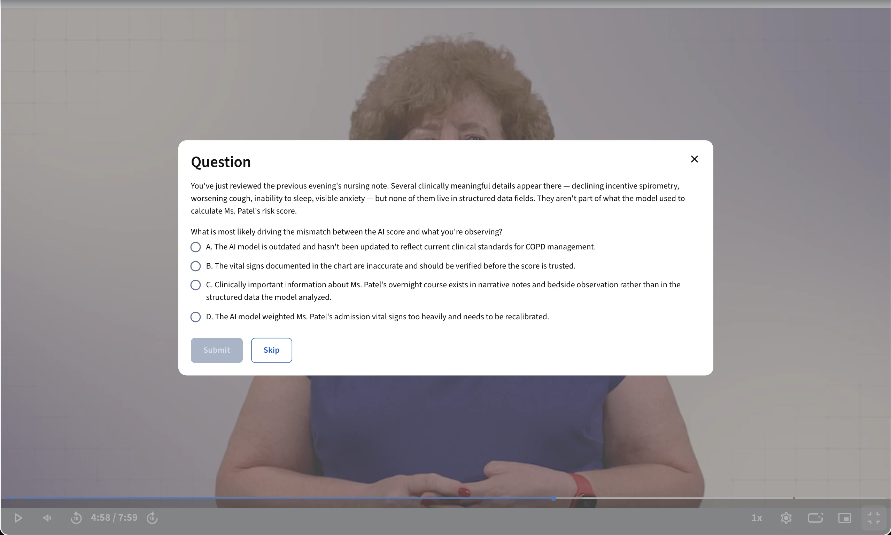

AI for Nurses is a three-course Coursera Specialization from the Duke University School of Nursing, designed for people across the nursing care team. I led the design and delivery with three faculty, with nurses helping shape the examples and activities along the way. It launched in September 2026. So far, learners who have finished rated it 5.0 out of 5, and our partners have funded a second year.
Making sense of AI on a nursing shift
Faculty at the Duke University School of Nursing were noticing a gap: nurses were being asked to use AI-enabled tools without much explanation of what they do or how to work with them. Sometimes a new tool appeared in their workflow with little introduction. Other times, AI was already part of the systems they used, but nurses had no reason to recognize it as AI.
Together with three School of Nursing faculty, we designed the series to give nurses a foundation for understanding and working with AI. It was the first of three planned Coursera Specializations.
Learning where AI shows up across a real shift
Turning what we learned into competencies
What learner testing informed for development
Testing with nurses improved the courses in three ways.
Three design decisions to support workforce learning
- Organize every course around four patterns nurses already see.Nurses described AI as something flagged, summarized, prioritized, or triggered. Each course comes back to those four patterns, so new terms always connect to something nurses have seen at work.
- Build from seeing, to evaluating, to applying.Course 1 helps nurses spot where AI shows up in their work. Course 2 helps them judge what an output is telling them. Course 3 has them use that judgment in clinical cases.
- Pair short expert videos with practice at a clinical moment.Faculty videos run under seven minutes. In Course 3, case videos pause three times so nurses make a clinical call in the moment. Each course ends with a capstone based on the nurse’s own workflow.
Turning everyday AI moments into decision practice
I used Cathy Moore’s action mapping to keep the design focused on what nurses need to do when AI shows up in their work. The approach starts with a goal, looks at what might get in the way, and builds in practice. Concepts and explanations support those actions rather than drive the course outline.
We first mapped the course’s concepts together in Miro with the instructors and project team. As Senior Learning Experience Designer, I facilitated the sessions and co-designed the map.
The interactive version below connects those concepts to actions nurses take on a shift. Select an action to explore the concerns nurses raised in our co-design session, how learners practice, and the ideas that support each decision.
How each course builds AI literacy
With the map in hand, we shaped three courses that build on each other. Here’s how they progress, how each one connects to what nurses see on a shift, and the activities inside them.
The learning progression and objectives
Survey data from working nurses and conversations with partners shaped a progression I shared early with stakeholders. Because the Specialization is accredited for nursing continuing education, accreditation requirements also informed design decisions along the way.
- Identify common AI tools used in nursing workflows.
- Explain how AI systems transform clinical data into outputs.
- Distinguish between rule-based systems, machine learning models, predictive AI, and generative AI.
- Describe how healthcare organizations select and govern AI tools.
- Explain how AI models learn from historical healthcare data.
- Interpret common AI outputs with appropriate confidence and skepticism.
- Identify situations where AI tools may perform poorly.
- Recognize how bias can emerge from historical data and healthcare system patterns.
- Apply the AI-SBAR framework to interpret and communicate AI-informed clinical concerns.
- Integrate AI outputs with patient assessment, clinical context, patient goals, and nursing judgment.
- Respond appropriately when AI outputs align with or conflict with bedside observations.
Four ways AI shows up in nurses’ workflows
Seven activity types and the capstones
Sample activities from the Specialization

How the project came together
The Specialization launched on Coursera in September 2026.
What we know so far
AI for Nurses launched in September 2026, so the data is still coming in. Here’s what I can see so far.
Over the next few months, I’ll be watching learner dropoff, item flags, and quiz question fidelity.